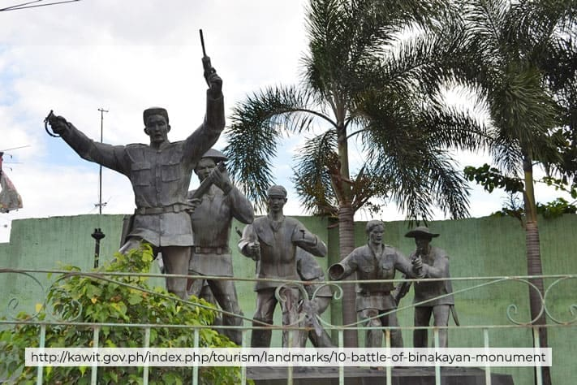

01Aguinaldo ShrineThe historic site where Philippine independence was declared. The grand mansion showcases the life of Emilio Aguinaldo.
4.9
Visit Website
|
02St. Mary Magdalene ChurchA centuries-old church where Emilio Aguinaldo was baptized. It is known for its beautiful architecture and historic value.
4.8
Visit Website
|
03Baldomero Aguinaldo ShrineThe ancestral home of Baldomero Aguinaldo, a revolutionary leader and cousin of Emilio Aguinaldo, showcasing historic artifacts.
4.7
Visit Website
|
04Island Cove Hotel and Leisure ParkA family-friendly leisure park with a waterpark, zoo, and various recreational activities perfect for a day of fun and relaxation.
4.6
Visit Website
|
05Battle of Binakayan MonumentA monument commemorating the Battle of Binakayan, a significant victory of Filipino revolutionaries over Spanish forces.

4.5
Visit Website
|
06Freedom ParkA park near the Aguinaldo Shrine where various national events are celebrated, offering a peaceful space for reflection.
4.4
Visit Website
|